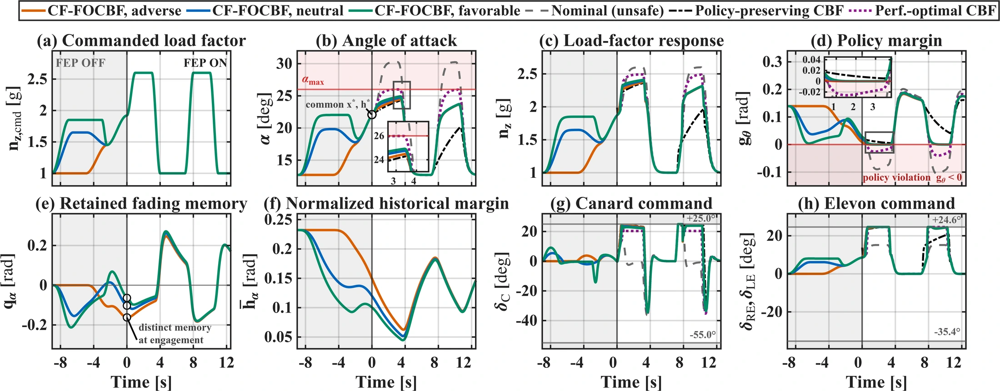
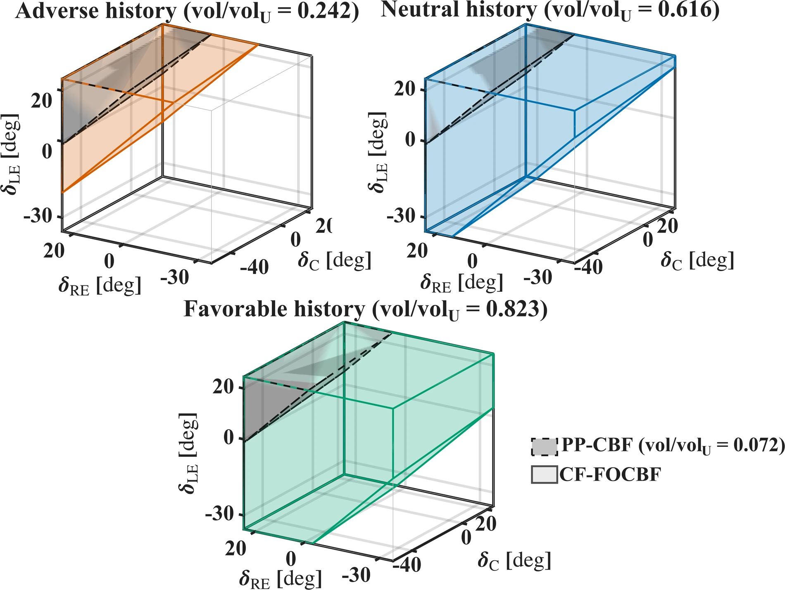
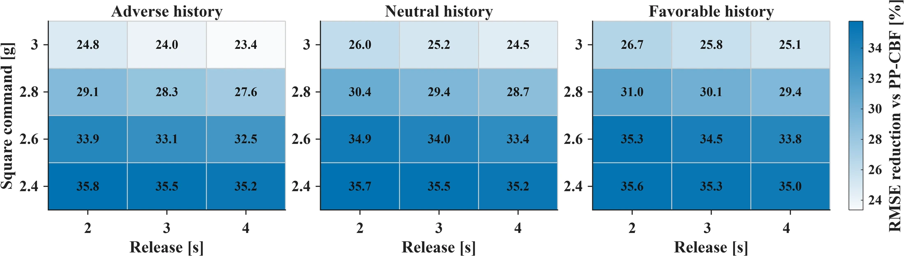
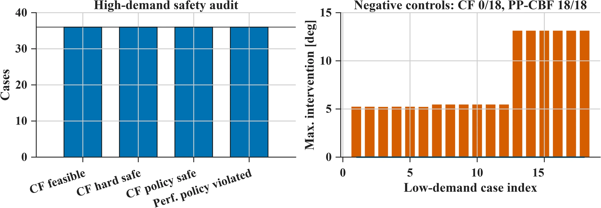
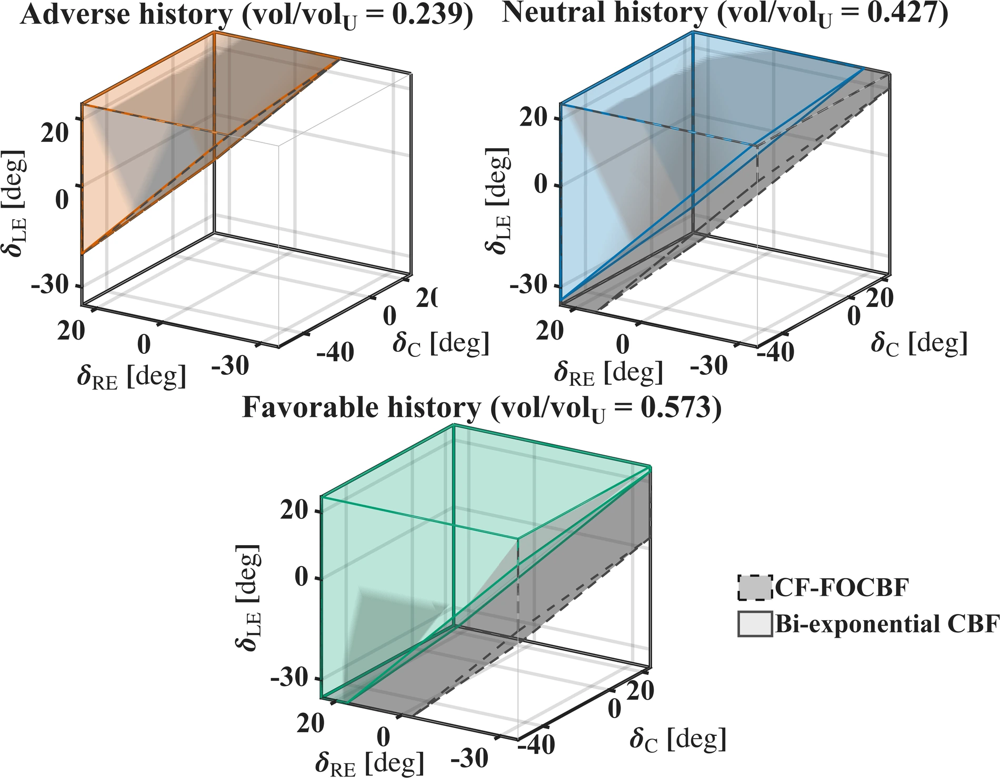
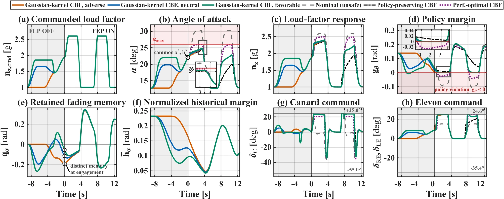
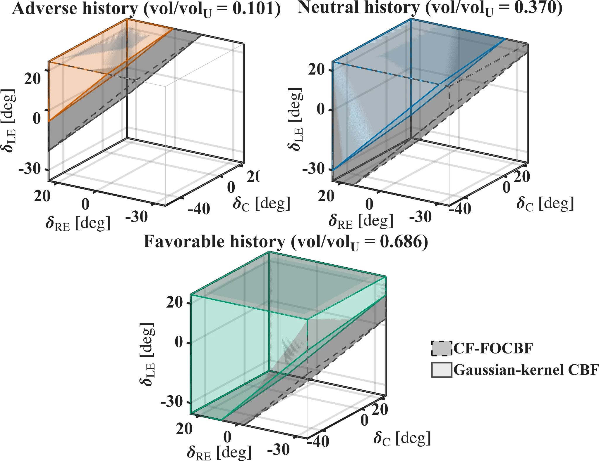

Exact one-state realization
\[\kappa_{\mathrm{CF}}(s)=\kappa_0 e^{-\lambda s}\]
\[\dot q=-\lambda q+\kappa_0\dot h\]
A single exponential kernel gives the exact one-state memory realization used in the manuscript benchmark.
IEEE L-CSS · Extended validation companion
Aviation Institute, Istanbul Technical University · Istanbul, Türkiye
A safety-filtering framework for integer-order systems in which retained barrier history conditions admissible control authority while the certified physical safe set remains state-defined.
01 · Main result
Three preparation trajectories reach the same activation state before the same twin-square demand is applied. Their retained barrier histories remain distinct, producing different policy margins and different admissible actuator authority from the same current physical state.


02 · Stress-test validation
The high-demand study sweeps command level, release duration, and prepared history. A separate low-demand study acts as a negative control for unnecessary intervention. Controller parameters are fixed within each study.


03 · Beyond CF
CF is computationally convenient because its exponential kernel admits an exact one-state realization. The same protocol is repeated with a bi-exponential kernel and with a Gaussian kernel evaluated directly from retained history. These studies test the mechanism; they are not intended as a cross-kernel performance ranking.
Section 3 uses the same history coordinate with three nonsingular fading-memory kernels; what changes is the kernel shape and, consequently, its exact realization.
A single exponential kernel gives the exact one-state memory realization used in the manuscript benchmark.
Two exponential modes produce an exact two-state realization and provide an intermediate finite-dimensional validation case.
The Gaussian convolution is evaluated directly from retained history, without replacing it by a finite-dimensional exponential surrogate.
Bi-exponential kernel
The adverse < neutral < favorable authority ordering persists under a two-mode fading-memory kernel using the same activation-state comparison.


Gaussian kernel
The Gaussian study removes reliance on an exact finite-dimensional exponential realization and evaluates the nonsingular memory term directly from retained history.


04 · Resources
The public page is intentionally curated around the scientific validation. Reproduction code will be released after the MATLAB package is cleaned and documented.
Extended stress tests and the bi-exponential and Gaussian kernel studies are collected in a single companion document.
Open supplementary PDF →A cleaned and documented MATLAB reproduction package is being prepared for public release.
Release in preparationThe numerical datasets underlying the reported figures and tables are available from the corresponding author upon reasonable request.
Contact corresponding author →